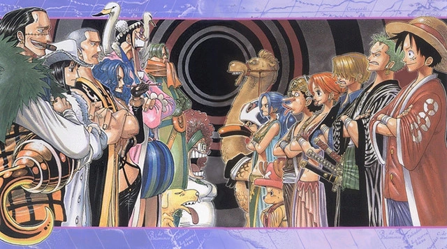

The Straw Hats finally reach the desert kingdom of Arabasta and begin their race across the land to reach Alubarna before a massive war can break out between the kingdom's royal guards and the rebels. However, the true perpetrator of the war, Mr. 0, and his remaining Baroque Works officer agents stand in the way of the Straw Hats reaching their goal.
Arriving in Arabasta: The Port Town of Nanohana
The port town of Nanohana in the desert Kingdom of Arabasta is being invaded by pirates. Crocodile, one of the Seven Warlords of the Sea, arrives and quashes the invasion. The townspeople are grateful and praise him as their hero. The news of the event reaches King Nefertari Cobra, and he says that they are indebted to Crocodile.
Meanwhile, the Straw Hats finally reach Nanohana. Luffy, hungry from the long journey, storms off into town without waiting for his crew. At a bar, he interrupts a confrontation between a man named Portgas D. Ace and Captain Smoker of the Marines, knocking both through the wall without his noticing. Luffy grabs a lot of meat but flees when Smoker stands back up and gives chase. He leads the Marines directly to his crew mates that were purchasing provisions and water in the town. Just as Smoker tries to catch them, Ace interrupts and secures an escape route for the Straw Hat Pirates.
Back on the ship, Luffy tells the crew the man who saved them was his brother. Ace hops onto the ship and meets the crew, but does not stay long and gives Luffy a piece of paper before leaving, destroying seven ships with Billions of the Baroque Works on the way out. Vivi also sends Karoo with a message to Alubarna to warn the King.
Arriving in Rainbase: Crocodile's Plan Unveiled
Upon their arrival in Rainbase, the thirsty Luffy and Usopp rush right into a bar to get water, only to unexpectedly run into Captain Smoker and Tashigi there (and spit water in their faces from shock). They get chased by the two and their Marine squad, which also draws the attention of the Baroque Works Billions stationed. The crew splits into groups: Nami and Usopp; Zoro and Vivi; Sanji; Luffy, chased by Smoker; and Chopper, who was left behind. Luffy, Nami, Usopp, Zoro, and Smoker all arrive at Rain Dinners, but they all are caught by a trap and thrown in a Seastone cage by Crocodile.
In Alubarna, Mr. 4 and Miss Merry Christmas have kidnapped King Nefertari Cobra while Mr. 2 Bon Kurei acts as him in Nanohana alongside a fake group of soldiers. There, he "admits" that he used Dance Powder to make it so that it rains only in Alubarna, and orders his soldiers to destroy the town, because they were the ones who saw the powder being carried in. Koza confronts him, but he is shot. Mr. 1 and Miss Doublefinger add to this destruction by crashing a huge ship filled with weapons into Nanohana.
Crocodile dares Vivi to try and help her friends and he floods the room, lets Bananawani in, and has one swallow the key. However, he suddenly gets a phone call by a Mr. Prince, recognized by the crew as Sanji, who starts off by imitating the phone call in Little Garden. Sanji makes Crocodile believe he got caught in front of the Rain Dinners and Crocodile goes to check out the situation in front of the casino. Chopper acts as a decoy, using his powers to avoid Crocodile while Sanji destroys the bridge between the Rain Dinners and the rest of Rainbase to ensure that Crocodile cannot return to Rain Dinners right away. With Smoker's suggestion, Sanji kicks the right Bananawani with the key, making it cough up both the key and a large wax ball.
Chopper picks up the crew with a Moving Crab named Hasami, a friend of Matsuge. Smoker decides not to pursue the Straw Hats to repay the favor to them for saving his life and instead gives the order to have nearby Marine forces depart for Arabasta immediately, heading out to their ship and leaving Tashigi in charge. As the Straw Hats run away, Crocodile tries to snatch Vivi from the crab, but she is saved by Luffy who lets himself get dragged off by the crab, promising to meet them in Alubarna.
Crocodile says that he will humor Luffy for three minutes but will finish him off once that time is up. Luffy attacks Crocodile but discovers that he cannot hit Crocodile as he just turns into sand thanks to the ability of his devil fruit, the Suna Suna no Mi. Crocodile also shows off some attacks as well, one of which dries Luffy's arm out, but Luffy takes water from his small barrel to restore his strength.
Once the three minutes are up, Crocodile creates a sandstorm and sends it off to Yuba, where Toto is, and explains that he was the one who was sending storms there every day. Luffy yells for him to stop it but Crocodile impales him with his hook during his distress. When Luffy proves he is still alive, Crocodile leaves him in quicksand to die
Luckily, Luffy is saved by Miss All-Sunday after Crocodile's departure. She then leaves Luffy in the hands of Pell, telling Pell that Luffy is responsible for the safe return of Vivi.
An Explosive Climax: Rain Falls on Arabasta
Luffy flings himself back up to Crocodile and Miss All Sunday goes off with Cobra to the Poneglyph, which is supposed to reveal the location of Pluton. Luffy, armed with a barrel of water, confronts Crocodile again, as he found his weakness and manages to get a few good hits. Crocodile however can still dry him up and stop his attempts at getting him wet by trying to blow away the soaked Luffy and his barrel. Seeing this, Luffy decides to take in all the water from the barrel, completely filling him, dubbing himself "Water Luffy". Crocodile does not take this form seriously and pays for it when Luffy fires a water bubble completely soaking Crocodile, and hits him with a Gomu Gomu no Bazooka
Luffy fights him and gains the upper hand, but eventually gets struck by the hook and is poisoned. However, he is so determined to send Crocodile flying and help Vivi that it hardly phases him much to Crocodile's increasing frustration. Crocodile goes to end it with a hidden knife in his hook. But Luffy dodges it and kicks Crocodile into the air to which Crocodile counters with an attack that further decreases the stability of the catacombs. Luffy weathers it and manages to get himself into the air afterwards. Both pirates go for a final attack with Luffy managing to bust through Crocodiles', slamming him with a massive attack called Gomu Gomu no Storm.
Crocodile is smashed through the roof of the mausoleum, through solid bedrock, and into the air, knocking over several buildings in the process landing the Baroque Works president in the center of the capital. Cobra crawls to the victorious young pirate to thank him for defeating Crocodile, to which Luffy replies "no problem" and smiles. Luffy is later saved from Crocodile's poison by Nico Robin who gives him the antidote. Luffy manages to awaken enough to grab Robin and Cobra and carry them out before the grave caves in
When he was young, Zoro trained in a dojo and had lost in practice duels to Kuina, the dojo master Koushirou's daughter, 2000 times in a row. He was frustrated over his losing, and one night challenged Kuina to a duel with real swords. Kuina beat him again, and Zoro became even more frustrated, but she then revealed that she was frustrated too as she was entering puberty and her father had said that men would always eclipse women in strength. This made Zoro mad, as he wanted to beat her because he had worked hard rather than because of his gender. He and Kuina then made a promise with each other that they would each work to become the Greatest Swordsman in the World and duel each other for the title. The next day, however, Zoro found out that Kuina had died after falling down the stairs. He asked Koushirou if he could have her sword, and emotionally declared that he would fulfill their promise for both of them and become the greatest swordsman possible.
In the present, as the Marines shot at Koby and Zoro, Luffy jumped out of the window and landed in front of them, causing the bullets to hit his body and ricochet back at the Marines. Luffy presented the swords to Zoro, who revealed that he wielded all three of them as a Three Sword Style user. With the Marines now unquestionably against him, Zoro decided to take up on Luffy's offer and become a pirate. The Marines then took out their swords and charged toward Luffy and Zoro, and Zoro told Luffy to give him his swords, allowing him to cut himself free and intercept all of the Marines at once. Luffy then hit all of the Marines with a stretched leg to knock them away. Morgan ordered his men to shoot themselves for their incompetence, and Luffy charged to fight him. Luffy quickly got the upper hand against Morgan, but Helmeppo then held Koby at gunpoint to stop Luffy from harming his father. Koby did not flinch in the face of death, and Luffy simply punched Helmeppo with Gomu Gomu no Pistol. Morgan rose back up to attack him from behind as he did this, but Zoro quickly cut him down. As Morgan and Helmeppo lay defeated, the Marines started celebrating.
Luffy, Zoro, and Koby went to Rika's mother's restaurant to eat, and Luffy and Zoro plotted to head for the Grand Line. Koby warned them against this as their friend but thanked them for teaching him to stand up for himself. The Marines then came to the restaurant, and although they were grateful to the pirates for defeating their captain, they still asked for them to leave. Luffy and Zoro did so, and the Marines asked Koby if he was going with them. Luffy then started to tell them about Koby's history with Alvida, causing Koby to punch him. Luffy punched back and started a brawl, causing the Marines to believe they were not friends. As Luffy and Zoro left, Koby asked the Marines to let him enlist, promising to work any job. Although one soldier still did not trust him, the chief Marine accepted his request. As Luffy and Zoro set sail, Koby then arrived to salute them, and to his surprise he was joined by the rest of the Marines in thanking the pirates. Luffy told Koby they would meet again and looked forward to heading for the Grand Line.